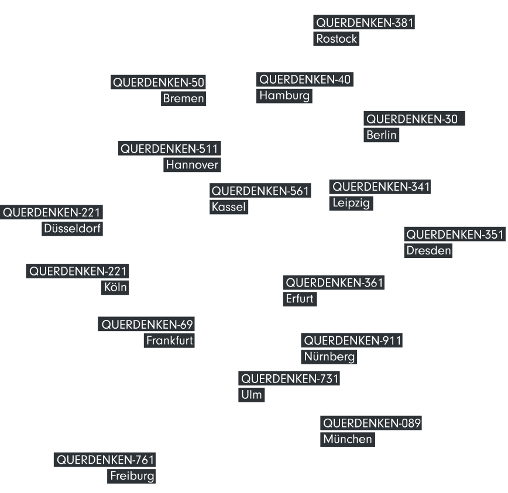

Discontent with the Government's response to the Covid-19 crisis has served as a gateway into the conspiracy landscape for many Germans. Large-scale protests against pandemic-related measures frequently make headlines and expose German society to this growing fringe group. But apart from these eruptions into the real world, the conspiracy milieu keeps to them themselves — on their digital platform of choice, Telegram.
This project offers a glimpse into the milieu's active online presence and sheds light on radicalization in online spaces.
Querdenken — A Chronicle of German Covid Denial
The group Querdenken — literally 'lateral thinking,' had its first appearance in late March 2020 in the city of Stuttgart. It was born out of rising discontent with how the German Government was responding to the Covid-19 crisis. First, only a few hundred people gathered to protest against corona measures, but over the months, the movement gained a lot of traction, sucking in smaller local groups that had formed in other German cities and resulting in the biggest protest to date on August 29, 2020, in Berlin. According to the estimates of officials, nearly 40.000 people came together to rage against the establishment (with the organizers claiming that number was closer to 1.3 million). Among the protestors were people from both fringes of the political spectrum and virtually all parts of society: esoterics, anti-vaxxers, left anti-capitalists, right-wing extremists, and those people, simply feeling discontent with wearing a mask — a heterogeneous group, united in a deep distrust of the state and in the paranoid belief that elites are imposing an oppressive 'corona dictatorship' on the public.
The public discourse around Querdenken has since become quieter, yet its supporters didn't go anywhere. Though the initiative remains in its infancy and is plagued by disorganization, in-fighting, and conflicting misinformation, Germany remains at risk of a resurgent far-right empowered by growing dissatisfaction about the Government's response to the pandemic.

First posts of Attila Hildmann in t.me/ATTILAHILDMANN
Querdenken on Telegram
Querdenken's primary tool of communication is Telegram. In its channels' environments, the movement recruits a following by spreading misinformation and conspiracy theories and organizes physical gatherings.
One feature that makes the platform so attractive is its channel tool that enables broadcasting messages to massive audiences. Telegram channels appear just like a normal chat but work one-way — the owner posts, subscribers read. Devoid of any comment or feedback functionality in the form of a like or dislike button, channels offer no mechanism for self-regulation, leading broadcasters to radicalize noticeably over time.
(Un)Echo Chamber blends the emotionally charged voice messages that Querdenkers frequently share in their channels into an immersive soundscape that visitors can explore across time. Moving through the space, sounds build up, taking the focus off single messages' precise wording.
In contrast to the isolating experience of following a Telegram channel, (Un)Echo Chamber is a shared space. Sound triggered by other visitors on the website layers onto one's own soundscape, single voices' momentum further and creating an ever-evolving concoction of anger.